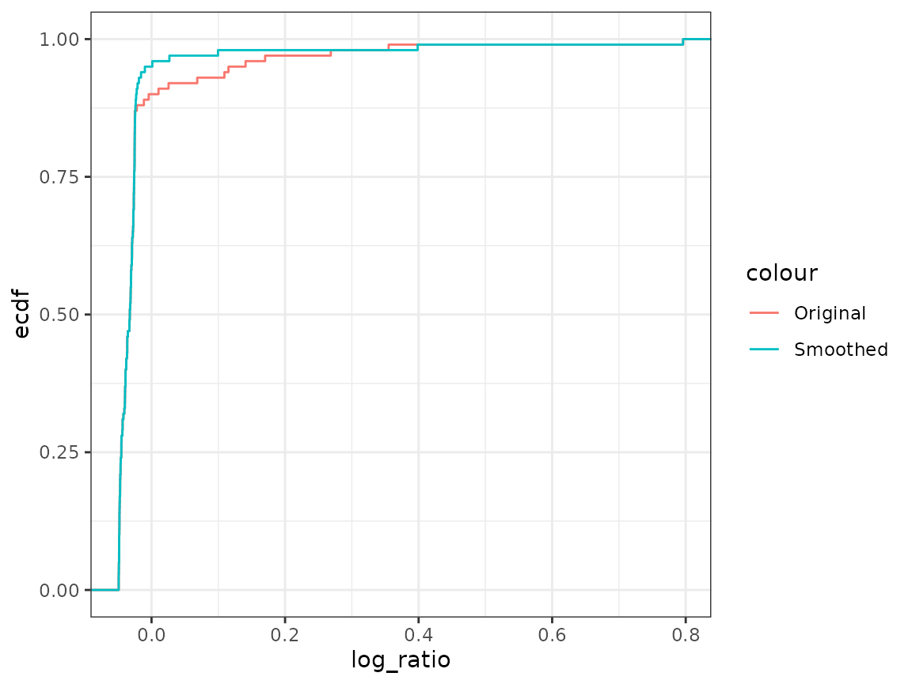

Tutorial 09: Bootstrap and Pareto smoothed importance sampling (solutions)
Finn Lindgren
Source:vignettes/Tutorial09Solutions.Rmd
Tutorial09Solutions.RmdIntroduction
In this lab session you will explore
- Exchangeability test for prediction scores
- Pareto smoothed importance sampling
- Open one of your github lab repository clone projects
- During this lab, you can work in a
.Rfile, but working with code chunks in a.Rmdis recommended. - Make sure you update the
StatCompLabpackage to version 21.9.0 or higher.
Filement model prediction comparison
Leave-one-out prediction
Revisit the Tutorial 6 and load the 3D printer filament data:
data("filament1", package = "StatCompLab")In tutorial 6, the two models A and B were estimated with
Predictions and scores were done with
pred_A <- filament1_predict(fit_A, newdata = filament1)
pred_B <- filament1_predict(fit_B, newdata = filament1)
score_A <- cbind(pred_A, filament1) %>%
mutate(
se = proper_score("se", Actual_Weight, mean = mean),
ds = proper_score("ds", Actual_Weight, mean = mean, sd = sd),
interval = proper_score("interval", Actual_Weight,
lwr = lwr, upr = upr, alpha = 0.1)
)
score_B <- cbind(pred_B, filament1) %>%
mutate(
se = proper_score("se", Actual_Weight, mean = mean),
ds = proper_score("ds", Actual_Weight, mean = mean, sd = sd),
interval = proper_score("interval", Actual_Weight,
lwr = lwr, upr = upr, alpha = 0.1)
)as well as with a 50% estimation/prediction data split.
Implement a function leave1out(data, model) that
performs leave-one-out cross validation for the selected
model. the two models; for each
,
estimate the model parameters using
,
compute the prediction information based on
for prediction model
,
and compute the required scores
.
The output should be a data.frame with
rows that extends the original data frame with four additional columns
mean, sd, se and ds
of leave-one-out prediction means, standard deviations, and prediction
scores for the Squared Error and Dawid-Sebastiani scores.
Solution:
leave1out <- function(data, model) {
data <- data %>% mutate(mean = NA_real_, sd = NA_real_)
for (i in seq_len(nrow(data))) {
fit <- filament1_estimate(data[-i, , drop = FALSE], model)
pred <- filament1_predict(fit, newdata = data[i, , drop = FALSE])
data[i, "mean"] <- pred$mean
data[i, "sd"] <- pred$sd
}
data <- data %>%
mutate(
se = proper_score("se", Actual_Weight, mean = mean),
ds = proper_score("ds", Actual_Weight, mean = mean, sd = sd)
)
data
}The following code should work if your code is correct:
score_A <- leave1out(filament1, model = "A")
score_B <- leave1out(filament1, model = "B")
ggplot() +
geom_point(aes(CAD_Weight, se, colour = "A"), data = score_A) +
geom_point(aes(CAD_Weight, se, colour = "B"), data = score_B)
ggplot() +
geom_point(aes(CAD_Weight, ds, colour = "A"), data = score_A) +
geom_point(aes(CAD_Weight, ds, colour = "B"), data = score_B)Exchangeability test
We want to investigate whether one model is better at predicting than the other. If they are equivalent, it should not matter, on average, if we randomly swap the A and B prediction scores within each leave-one-out score pair . Use the test statistic , and make a Monte Carlo estimate of the p-value for a test of exchangeability between model predictions from A and from B against the alternative hypothesis that B is better than A. First compute the test statistic for the two prediction scores.
Hints: For this particular test statistic, one possible approach is to first compute the pairwise score differences and then generate randomisation samples by sampling random sign changes. Compute the test statistic for each randomly altered set of values and compare with the original test statistic. See the lecture on exchangeability for more information. Start with iterations when testing your code. Increase to 10000 for more precise results.
Solution:
score_diff <- data.frame(se = score_A$se - score_B$se,
ds = score_A$ds - score_B$ds)
statistic0 <- score_diff %>% summarise(se = mean(se), ds = mean(ds))
J <- 10000
statistic <- data.frame(se = numeric(J),
ds = numeric(J))
for (loop in seq_len(J)) {
random_sign <- sample(c(-1, 1), size = nrow(score_diff), replace = TRUE)
statistic[loop, ] <- score_diff %>% summarise(se = mean(random_sign * se),
ds = mean(random_sign * ds))
}
p_values <-
statistic %>%
summarise(se = mean(se > statistic0$se),
ds = mean(ds > statistic0$ds))
# Estimates:
p_values## se ds
## 1 0.5011 0.0442
# Monte Carlo std.error::
sqrt(p_values * (1 - p_values) / J)## se ds
## 1 0.004999988 0.002055392We see that for the Square Error scores, the two model predictions appear exchangeable, but when prediction uncertainty is taken into account in the Dawid-Sebastiani score, B appears to be better than A, on average.
Pareto smoothed importance sampling
Explore the Pareto smoothed importance sampling (PSIS) method. Use a t-distribution with 10 degrees of freedom, and importance sampling distribution for different values of . Use or more samples.
Use the loo::psis() function to compute Pareto smoothed
importance log-weights and diagnostics. What effect does different
values of
have on the
parameter estimate? (the
value is in the $diagnostics$pareto_k field of the
loo::psis() output.) Plot the original and smoothed
log-weights as a function of
,
and with stat_ecdf, for different values of
,
including
and
.
Solution:
sigma <- 1
x <- rnorm(100, sd = sigma)
log_ratio <- dt(x, df = 10, log = TRUE) - dnorm(x, sd = sigma, log = TRUE)
result <- loo::psis(log_ratio, r_eff = 1)## Warning: Some Pareto k diagnostic values are too high. See help('pareto-k-diagnostic') for details.
result$diagnostics$pareto_k## [1] 2.692393
result$diagnostics$n_eff## [1] 98.14698
df <- data.frame(x = x,
log_ratio = log_ratio,
log_weight = result$log_weights)
ggplot(df) +
geom_point(aes(x, log_ratio, color = "Original")) +
geom_point(aes(x, log_weight, color = "Smoothed"))
ggplot(df) +
stat_ecdf(aes(log_ratio, color = "Original")) +
stat_ecdf(aes(log_weight, color = "Smoothed"))